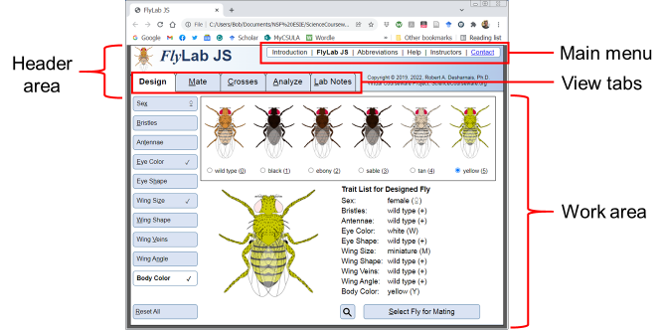
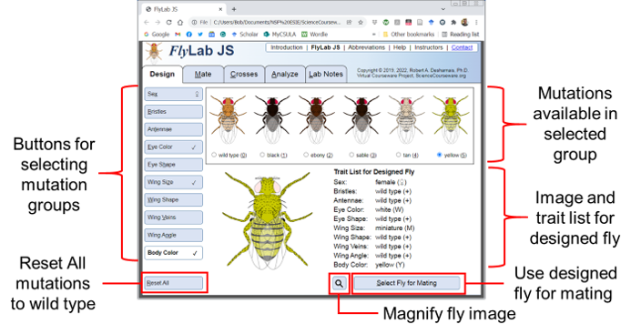
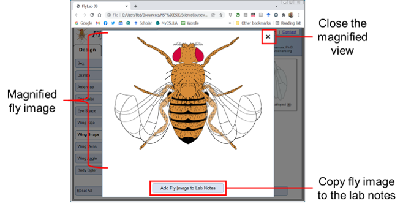
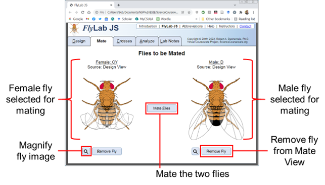
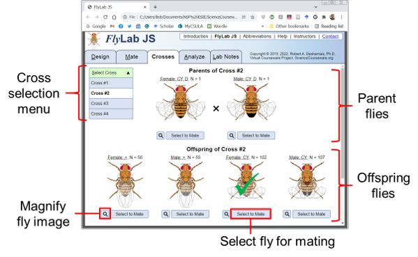
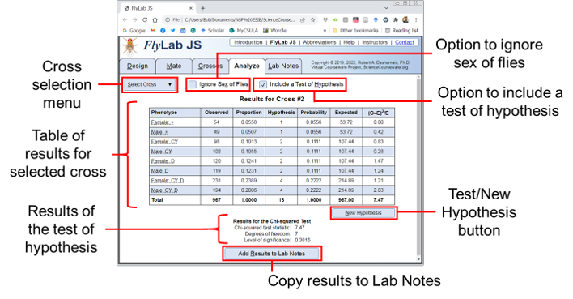
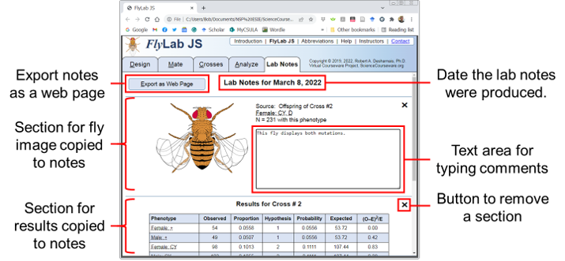

The FlyLab JS application has two main regions: (1) a header area at the top of the document and (2) a work area (Fig. 1). The header area contains the main menu and view tabs, as well as an application logo and copyright information. The work area is where most or your activities are conducted. The main menu links and different work area views are explained in the sections below.

Figure 1. Overview of the FlyLab JS layout
The main menu has the following links:
Introduction. This link opens a supporting document that describes the learning objectives and prerequisites for FlyLab JS, the assumptions underlying the FlyLab JS genetics, and an explanation of the chi-squared statistical analysis provided by the application.
FlyLab JS. This link opens the main application where one can design and mate flies, and view and analyze the results of genetic crosses. If you close or reload this page, the application will reset, and you will lose any work you have not exported from the lab notes.
Abbreviations. This link opens a document that lists the abbreviations for the genetic mutations in FlyLab JS. The abbreviation scheme differs from what Drosophila geneticists use.
Help. This link opens the help page you are currently reading.
Instructors. This link leads to information and suggestions created for instructors. Access to this information requires a username and password which can be obtained by email using the contact information provided. Usernames and passwords will only be provided to instructors.
Contact. This link allows you to send an email to the creator of FlyLab JS.
The view tabs allow you to access the different views of FlyLab JS. Each view supports a different function of FlyLab JS. You can switch views at any time using the view tabs. What follows is a brief description of the purpose of each view. Details on each of these views is described in the sections below.
Design View is where you design flies for your experiments. You can select from a variety of genetic mutations. The designed fly can be copied into the Mate View to conduct a genetic cross.
Mate View is where you cross and a male and female fly. There are two possible sources for flies to be mated: (1) they can be created in the Design View, or (2) you can select a parent or offspring fly from a previous cross in the Crosses View. Once two flies are mated a new entry with the results of the cross appears in both the Crosses View and the Analyze View.
Crosses View shows a graphical representation of a genetic cross. The phenotypes of the parents and offspring are displayed. Any of the flies in the Crosses View can be selected for mating. If you have conducted more than one cross, you can access any of them using the Select Cross button.
Analyze View presents a table of results from a genetic cross and allows you to test a hypothesis for the ratios among the offspring phenotypes. If you have conducted more than one cross, you can access any of them using the Select Cross button.
Lab Notes View serves as a “laboratory notebook” where you can keep images of flies from the Magnify View and tabular results from the Analyze View. You can also add your own comments. The lab notes can be exported to a regular web page for printing, copy/pasting, or saving to your computer.
The Design View can be accessed using the Design tab. Users can select from a variety of possible mutations. Mutations are organized into mutation groups and a single mutation can be selected from each group. Each group (except sex) has wild type as an option. Once the user has selected the mutations they want to use, the designed fly can be selected for mating.

Figure 2. Layout of the Design View in FlyLab JS.
The buttons of the left side of the view are used to switch among mutation groups (Fig. 2). If a mutation other than wild type is selected, a check box appears on the right side of the button. For the Sex button, a male or female symbol indicates the chosen sex for the designed fly. The button for the currently chosen mutation group will have a boldface label and white background color.
The Reset All button can be used to reset all the mutations to wild type (Fig. 2). The selected mutation group is changed to Sex but the chosen option for sex is not changed.
The possible options for each mutation group are displayed in the box at the top middle portion of the view (Fig. 2). A graphical representation of each mutation option is displayed. The radio buttons below each option can be used to select a mutation. Wild type is default option. Placing the mouse cursor over the image will provide a description of the mutation.
The large fly image in the bottom portion of the screen shows the appearance of designed fly with the mutations that have been currently selected (Fig. 2). Placing the mouse cursor over the image will provide a textual description of the phenotype. To the right of the fly image is a list of the selected traits for each mutation group (Fig. 2). These are updated whenever a new mutation or female/male sex option is selected.
The small square button at the bottom of the view with a magnifier icon (Fig. 2) can be used to pop up a magnified image of the designed fly. This image can be copied to the lab notes.
Clicking the Select Fly for Mating button in the lower right corner of the view (Fig. 2) will move the designed fly into the Mate View which will become the active view. If a fly of the same sex is already in place in the Mate View, an alert panel will give the user the option of replacing the fly in the Mate View with the designed fly or cancelling the selection. Selecting a designed fly for mating resets all the mutations in the Design View to wild type.
If one fly (female or male) has already been selected for mating and it carries one or more mutations, the options for a mutation group will be limited to wild type and the mutation of the previously selected fly. For example, if a female fly with curly wings has already been selected for mating, the wing shape options for the male fly in the Design View are limited to wild type and curly wings.
The Magnify View (Fig. 3) can be used to examine more closely any of the flies in the Design View, Mate View, or Crosses View. The Magnify View is obtained using the small square button with a magnifier icon located near the image of the fly.

Figure 3. Layout of the Magnify View in FlyLab JS.
The Magnify View is a modal view—no other actions can be taken in FlyLab JS while the view is open. The small Close Button (x) in the upper right can be used to dismiss the Magnify View (Fig. 3).
The Magnify View can be used to create a copy of the fly image in the Lab Notes View. This is accomplished using the Add Fly Image to Lab Notes button at the bottom of the view (Fig. 3). This button will dismiss the Magnify View and change the active view to the Lab Notes.
The Mate View can be accessed using the Mate tab. The purpose of this view is to mate a female and male fly to produce a genetic cross. The source of either of the two flies in the Mate View can be the Design View, where the fly is created from options of possible mutations, or the Crosses View, where the fly is an offspring or parent from a previous mating.

Figure 4. Layout of the Mate View in FlyLab JS.
In the Mate View, the female parent appears on the left and the male parent on the right (Fig. 4). If no fly has been selected, a greyed-out fly image will be displayed.
A small square button with a magnifier icon (Fig. 4) will appear below the female or male, if one has been selected. This button can be used to pop up a magnified image of the fly. This image can be copied to the lab notes.
If no fly has been selected, a Design Fly button will appear below the greyed-out fly image. Clicking this button will take you to the Design View. If a fly has been selected for mating, a Remove Fly button appears below the fly image (Fig. 4). Clicking this button will remove the fly from the Mate View.
If both a female and male fly have been selected, the Mate Flies button will be enabled (Fig. 4). Clicking this button will produce a genetic cross between the two flies. The current view will change to the Crosses View where the parents and offspring appear. The numerical data for the cross will also appear in tabular form in the Analyze View.
The Crosses View can be accessed using the Crosses tab. The purpose of this view is to examine graphically the phenotypes resulting from a genetic cross.

Figure 5. Layout of the Crosses View in FlyLab JS.
The Select Cross drop-down menu can be used to access any of the crosses made during the current FlyLab JS session (Fig. 5). Clicking on the button expands the menu to show all the available crosses. Clicking an entry will change the work area to display the selected cross.
The parents of the selected cross are shown at the top of the Crosses View and the offspring phenotypes are shown below the parents (Fig. 5). If there are more than four types of offspring, the scroll bar on the right of the view becomes active and one can scroll through the remaining entries. The sex, phenotype, and number of flies represented by the image are listed above each fly image. One can place the mouse cursor above the genetic abbreviation or fly image to see an expanded description of the phenotype.
A small square button with a magnifier icon (Fig. 5) appears below each fly image. This button can be used to pop up a magnified view of the fly. This image can be copied to the lab notes.
One can use any parent or offspring fly for another mating by clicking the Select to Mate button (Fig. 5). If no flies currently exist in the Mating View, a green checkmark will be superimposed onto the selected fly, and the Crosses View will remain active. If one fly of the opposite sex has already been selected for mating, the Mate View which will become the active view.
Selecting a fly for mating from an offspring phenotype will select only a single fly. If that fly image represents a mixture of genotypes with the same phenotype, then the genotype of the selected fly is determined at random based on the expected proportions among the genotypes in the phenotype group. For example, if the fly image being displayed represents a group of flies with a wild type phenotype, but 1/3 of those flies are expected to be homozygous dominant for wild type, and 2/3 are expected to be heterozygous for a recessive trait, then the fly selected for mating will be either homozygous or heterozygous with probabilities of 1/3 and 2/3, respectively.
The Analyze View can be accessed using the Analyze tab. The purpose of this view is to examine and test hypotheses for the phenotype data resulting from a genetic cross.

Figure 6. Layout of the Analyze View in FlyLab JS.
The Select Cross drop-down menu can be used to access tabular data for any of the crosses made during the current FlyLab JS session (Fig. 6). Clicking on the button expands the menu to show all the available crosses. Clicking an entry will change the work area to display the selected cross.
The work area of the Analyze View shows the results of the selected cross in a tabular format. The default table has three columns: (1) the phenotype using the genetic abbreviations, (2) the observed number of flies for each phenotype, and the proportion of flies for each phenotype. The proportions are obtained by taking the observed number and dividing by the total number of offspring.
In many cases you may want to simplify the data by combining the numbers of females and males with the same phenotypes. Clicking the check box option Ignore Sex of Flies (Fig. 6) will reorganize the table by combining rows where flies have the same phenotype regardless of their sex. This option can be selected independently for tables that exclude or include a test of hypothesis.
FlyLab JS allows users to test hypotheses they may have regarding the phenotypic ratios among the offspring. Clicking the check box option Include a Test of Hypothesis (Fig. 6) will add four columns to the table: (1) hypothesis, (2) probability, (3) expected, and (4) the chi-squared term. This option can be selected independently for tables that include or ignore the sex of the flies. It also adds a button labeled Test Your Hypothesis below the table that can be used to test the hypothesis and the results of the chi-squared test. The hypothesis column will hold text fields where the user can enter the values for their hypothesis. These are positive numbers that represent the hypothesis of relative abundances for each phenotype. Each number will be divided by the total of the entered values to get probabilities which appear in the fifth column. These probabilities are multiplied by the observed total number of offspring to obtain expected values for the number of offspring, displayed in the sixth column, that would occur if the entered hypothesis was true. The observed (O) and expected (E) numbers are used to compute the chi-squared term, (O–E)2/E for each phenotype. The sum of these chi-squared terms is the test statistic for the hypothesis. After a hypothesis has been tested, the button below the table will change to New Hypothesis. Clicking this button will allow another hypothesis to be entered and tested. If a hypothesis has been tested, the results of the test appear below the table. The results include the chi-squared test statistic, the degrees of freedom for the test statistic, and the level of significance. If the level of significance is below 0.05, the hypothesis should be rejected. See the last section of the Introduction for more information on the chi-squared test.
The results displayed in the Analyze View can be copied to the Lab Notes View. This is accomplished using the Add Results to Lab Notes button at the bottom of the view. This button will change the active view to the Lab Notes, scrolled to the beginning of the newly copied results.
The Lab Notes View can be accessed using the Lab Notes tab. The purpose of this view is to serve as a “laboratory notebook” where you can keep images of flies from the Magnify View and tabular results from the Analyze View and export them to a web page.
FlyLab JS is a javascript applet that does not store any information produced by the user’s experiments. This means that once you navigate away from the web page, reload the applet, or close the browser window, all crosses and data analyses will be lost. Information you which to keep can be copied to the Lab Notes View and exported to a web page that can be bookmarked, saved, copied, or printed for later use.

Figure 7. Layout of the Lab Notes View in FlyLab JS.
The Lab Notes View is organized into sections (Fig. 7) which are separated by horizontal lines. Each section represents an item that was copied from an experiment. There are two types of sections: (1) a fly image section, or (2) a results section. Both types of sections have text areas where the user can type comments. A section can be removed by clicking on the small close button (X) that appears in the upper right corner. A panel will appear asking the user to confirm the deletion. There is no “undo” for the removal of a section, although the information can be re-copied into the Lab Notes from the Magnify or Analyze Views.
In the top left corner of the Lab Notes View is a button labelled Export as Web Page. Clicking on this button will open a new browser tab with a standard web page that contains a copy of all the items in the Lab Notes. You should note the URL of this page if you want to return to it later. The exported web page will remain available for a minimum of two weeks before being deleted from the server.
FlyLab JS has many keyboard shortcuts for both convenience and accessibility. It is possible to use FlyLab JS without the aid of a pointing device.
Most labelled buttons in FlyLab JS have a keyboard alternative which is indicated using an underlined character as part of the label. The Crosses View is an exception because there could be dozens of flies represented, each with its own Select to Mate button. Keyboard alternatives are available as specified in the tables below. The Tab and Alt-Tab keys can be used to cycle through the controls and other elements in the browser window.
All Views:
Control Element
Shortcut
Effect
Tabs for views
right, left arrow (→, ←)
Cycles through the view tabs.
Design tab
d, D
Selects the Design View.
Mate tab
m, M
Selects the Mate View.
Crosses tab
c, C
Selects the Crosses View.
Analyze tab
a, A
Selects the Analyze View.
Lab Notes tab
l, L
Selects the Lab Notes View.
Design View:
Control Element
Shortcut
Effect
Sex button
x, X
Selects the sex options.
Antennae button
t, T
Selects the antennae options.
Eye Color button
e, E
Selects the eye color options.
Eye Shape button
h, H
Selects the eye shape options.
Wing Size button
z, Z
Selects the wing size options
Wing Shape button
w, W
Selects the wing shape options.
Wing Veins button
v, V
Selects the wing vein options.
Wing Angle button
n, N
Selects the wing angle options.
Body Color button
o, O
Selects the body color options.
Reset All button
r, R
Resets all traits to wild type.
Magnify button
g, G
Magnifies the designed fly.
Select Fly for Mating button
s, S
Selects designed fly for Mate View.
Select mutation
0–5
Selects trait from the mutation group.
Next/previous mutation
right, left, up, down, arrows (→, ←, ↑, ↓)
If focus is on the radio button group, cycles through available mutations.
Mate View:
Control Element
Shortcut
Effect
Design Fly button (female)
e, E
Opens Design View with female sex option.
Design Fly button (male)
s, S
Opens Design View with male sex option.
Remove Fly button (female)
r, R
Removes female fly from Mate View.
Remove Fly button (male)
v, V
Removes male fly from Mate View.
Mate Flies button
f, F
Mates flies in Mate View and shows cross.
Crosses View:
Control Element
Shortcut
Effect
Select Cross button
s, S
Expands/collapses the crosses list.
Next/previous cross
up, down arrows (↑, ↓)
Cycles through options in crosses list.
First cross
Home key
Goes to first item in crosses list.
Last cross
End key
Goes to last item in crosses list.
Collapse crosses list
Esc key
Collapses the crosses list.
Analyze View:
Control Element
Shortcut
Effect
Select Cross button
s, S
Expands/collapses the crosses list.
Next/previous cross
up, down arrows (↑, ↓)
Cycles through options in crosses list.
First cross
Home key
Goes to first item in crosses list.
Last cross
End key
Goes to last item in crosses list.
Collapse crosses list
Esc key
Collapses the crosses list.
Ignore sex check box
x, X
Ignores/includes sex of flies.
Include hypothesis check box
h, H
Includes/excludes hypothesis test.
Next/previous hypothesis field
up, down arrows (↑, ↓)
Cycles through hypothesis text fields.
Test hypothesis button
t, T
Tests the entered hypothesis.
New hypothesis button
n, N
Allows a new hypothesis to be tested.
Add results to notes button
n, N
Adds table of results to lab notes.
Lab Notes View:
Control Element
Shortcut
Effect
Export button
e, E
Exports the lab notes to a web page.
Magnify View:
Control Element
Shortcut
Effect
Close button
x, X
Closes the modal magnify fly view.
Add Fly to Lab Notes button
i, I
Adds fly image to lab notes
FlyLab JS has been enhanced to improve usability with screen readers. Verbal explanations have been included for most actions taken by the user. All screen items, including titles, images, labels, table cells, etc., are accessible using the Tab and Alt-Tab keys. Helpful verbal descriptions have been added to many onscreen objects.